한눈에 요약
단원 → 파트 → 카드 순서로 꼭 외울 것만 모았어. 번호는 단원-파트-카드 (예: 8-3-2 = 8강 파트 3의 2번 카드). 번호나 이름을 누르면 그 상세 카드로 바로 가. 돌아올 땐 단원 머리의 ↑ 요약이나 브라우저 뒤로 가기. 주황 글씨는 시험 함정. pseudo code는 뒤쪽 Pseudo code 섹션에서 따로 봐.
질문box label이 없는데 instance-level target은 어디서 오나?→ 대개 모델이 고른 window가 target이 돼: MIL로 사진을 bag으로 보고 → 고르기와 학습을 번갈아 → end-to-end network 안의 pseudo label로. 예외: WSDDN은 box를 안 고르고 image label만 써
- 8-1-1Weak supervisionLower degree (or cheaper) annotation at train time than the required output at test time · 1 sec per class → 2.4 point → 10 b-box → 78 pixel (sec per instance)약한 쪽은 train annotation, 기준은 test 출력
- 8-1-2Semi vs Weakly semiSemi = labeled(box) + unlabeled · Weakly semi = labeled(box) + weakly labeled(image label)
- 8-1-3Transfer learningauxiliary categories(box 있음)로 detector 학습 → weakly supervised categories로 지식 이전
- 8-1-4Self-supervised learningpretext task로 representation → downstream에 weight 이전 · "Transfer-learning requires regular annotations"
- 8-1-5Pretrained + weak fine-tuning"Typically uses pretrained networks and fine-tunes them by using weak supervision"
- 8-2-1Generic object recognitionIntra-class variations(Appearance · Viewpoint · Scale · Aspect ratio) · Background clutter · Occlusions
- 8-2-2Co-occurrenceParts vs object · Context vs object · Multiple vs single instance → image label만으론 답이 안 정해져 (ill-posed)세 경우 모두 정답은 물체 하나 전체 (1 sheep, Train, Face + whole body)
Two step alternating optimization. Challenges: Sensitive to initialization (local minimum) · Overfitting (locking) to predicted windows
- 8-3-1MILbag classification 문제로 재정의 · bags = images, instances = windows · Goals: find true positive instances, train window classifier아는 건 bag label, instance label은 몰라
- 8-3-2Standard MIL pipelineInitialize → Re-train ↔ Re-localize 반복 · locking = 틀린 box가 계속 뽑히는 악순환 (≈ L07 confirmation bias)
- 8-3-3How to generate bagsSliding windows(dense, 4D space) · Object proposals(Selective Search, Edge Boxes, ~2k per image, commonly used)
- 8-3-4InitializationWhole image · Whole image minus a margin · Song graph: relevant · discriminative · complementary
- 8-3-5Re-localizearg maxb A(xb) · highest scoring window · Only one positive instance per image
- 8-3-6Re-trainHinge and cross-entropy · positive maxb A > Δ · negative maxb A < −Δ (1등도 −Δ 아래 = 전부 negative)supervised와 차이: positive 사진당 positive 1개, positive 사진의 negative 없음
- 8-4-1Relaxing max operatorhard max → log-sum-exp · "Hedge your bets" · Less sensitive to initialization · multiple positive samples
- 8-4-2Self-paced learningCurriculum Learning에서 착안 · easy samples부터 · Easiness: confidence of max scoring window, smaller windows, intercategory competition
- 8-4-3Multifold MIL그 사진을 학습한 적 없는 detector가 localize · cross-validation stylepositive는 all folds but k, negative는 전부
- 8-4-4Pairwise similaritypositive 사진들 사이 닮은 window를 같이 선택 (CRF) · (+) Less overfitting · (−) N² similarities, intra-class variation 무시
- 8-4-5Sub-categories · ExemplarspLSA clustering: (+) intra-class variations (−) number of clusters에 민감 · Exemplars: (+) cluster 수 안 정해도 됨
- 8-5-1ContextAdditive: context와 semantically compatible한 ROI · Contrastive: context에서 outstanding한 ROI
- 8-5-2Objectnessarg maxb λA(xb) + (1−λ)Obj(b) · whole object 쪽으로, background에서 멀리class-independent prior ("object of any class")
- 8-5-3Priors: EquivarianceThe predicted output should be equivariant to image transformations (입력이 변하면 출력도 같이 변함)
- 8-5-4Priors: ScaleCurriculum + 추정 크기로 proposal에 weight · size estimator 학습용 small set 필요순서는 bigger → smaller
- 8-5-5Priors: Motionmotion segmentation으로 tube 추출 → 비디오당 tube 하나 joint 선택 → objectness로 후보 축소 → domain adaptation · (−) Noisy data
- 표보강 전체More robust optimization · More robust re-localization · Pairwise similarity · Additional cues · Priors로 묶여
WSDDN → OICR(instance 분류) → PCL(여러 pseudo object) → Ren(discriminative part)
- 8-6-1WSDDNFirst end-to-end WSOD · RoI-Pooling · Two stream: Classification(region마다 class score) ⊙ Localization(class마다 region 비교) → proposal 합 → image score한계: multiple positives ✗ · positive 사진의 negative ✗ · bounding box regression ✗ · discriminative parts를 잡음 · 여러 instance를 한 box로 묶음
- 8-6-2OICRWSDDN으로 instance label 시작 → instance classifier로 반복 refine · WSDDN → Pseudo labels → Instance classifier → Better pseudo labels → ..WSDDN = image 분류(implicit) ↔ OICR = instance 분류
- 8-6-3PCLtop-ranking proposals로 undirected graph → 연결 많은 vertex가 cluster centre → cluster = 독립 pseudo objectOICR = single pseudo object ↔ PCL = multiple
- 8-6-4Instance-aware, Context-focused WSODWSDDN + OICR 위에 top p% · ConcreteDropBlock · Adversarial optimization arg minw maxθ · discriminative-part 문제를 직접 공격most relevant regions를 지워 · w는 min, θ는 max
- 8-6-5Summary on WSODill-posed · sensitive to initialization, prone to overfitting · progress: objectness and region proposals, priors and cues, end-to-end learning
- 표네 방법 비교instance target · positive 고르기 · multiple positives · positive 사진의 negative · box regression · discriminative part
읽는 법
이 페이지는 이 분야를 처음 보는 사람 기준으로 썼어. 강의 순서대로 따라가면서, 처음 나오는 용어는 그 자리에서 괄호로 풀고, 수식은 기호 하나하나를 말로 옮겼어.
- 큰 그림(MAP)부터 봐. 기말 범위가 어떤 질문으로 이어지는지만 잡으면 돼.
- 용어 먼저(ABC)는 외우지 말고 훑어. 본문의 용어 링크를 눌러 돌아와도 돼.
- L08을 순서대로 읽어. 앞 방법의 한계가 다음 방법의 문제가 되는 구조라서, 건너뛰면 "이 방법이 왜 나왔지?"가 안 보여.
- 단원 끝 셀프 체크는 영어로 직접 써 보고 정답을 열어. 중간고사는 20문제 중 15개가 영어로 쓰는 문제였어.
- 다 읽고 나서 공통 패턴(PAT)과 Pseudo code(PC)를 봐. 시험 전날엔 마지막 체크(D-1)로 영어 문장이 바로 나오는지 확인해. 외울 것만 보려면 한눈에 요약(SUM)을 봐. Physical AI 연결(PAI)은 동기 부여용이고 시험 범위가 아니야.
기호와 번호
8-3-2는 "8단원, 3번 파트, 2번째 카드"야. 파트는 제목 앞 파란 네모 번호야.p.N은 강의 PDF의 페이지 번호야. 다른 강의를 가리킬 땐L07 p.42처럼 써.- 한 줄일상어 요약. 문제왜 나왔나. 핵심아이디어. 어떻게단계별 절차. 왜 돼?직관. 차이이전 방법과 다른 점 ("A vs B" 문제가 여기서 나와).
- 기술 용어와 방법 이름은 영어 그대로 뒀어. 시험 지문에서 그 단어를 바로 알아봐야 하거든.
← slide엔 …은 슬라이드 표기가 실제와 다른 곳이야. 시험 지문은 슬라이드 표기를 따를 수 있어.(학회 약어: CVPR = Computer Vision and Pattern Recognition, ECCV = European Conference on Computer Vision, ICCV = International Conference on Computer Vision, ICML = International Conference on Machine Learning, NeurIPS(NIPS) = Neural Information Processing Systems, BMVC = British Machine Vision Conference, TPAMI(PAMI) = IEEE Transactions on Pattern Analysis and Machine Intelligence)
박스 네 종류
본문을 일상어나 작은 숫자 예시로 다시 말한 거야. 예시 숫자는 설명용이고 슬라이드 수치가 아니야.
네 분야(RL) 개념으로 바꿔 말한 거야. 슬라이드 밖이라 시험 범위가 아니야.
슬라이드 문장을 살짝 비틀어서 T/F로 내기 좋은 곳이야.
이 강의의 한계가 다음 강의의 질문이 되는 연결고리야.
큰 그림: 모자란 supervision을 어떻게 메우나
중간고사 범위(L01–L07)는 "사람이 label을 안 주면 학습 target은 어디서 오나?" 한 질문으로 꿰었어. 기억난 문제의 절반 넘게 "label · target을 누가 어떻게 만드나"였어.
기말 범위는 W10–W14 다섯 강의야. 임시 질문은 annotation을 덜 쓰면서 모자란 supervision을 어떻게 메우나?야. 아직 L08 하나만 들었으니까 W14가 끝나면 이 질문을 다시 볼 거야.
| 주차 | 강의 | 이 질문에 대한 답 | 상태 |
|---|---|---|---|
| W10 11/5 | L08 Weakly-Supervised I | label을 약하게 줘. image label만 주고, 어느 box가 물체인지는 모델이 찾아. 대개 고른 box가 다음 학습의 target이 돼. | 정리됨 |
| W11 11/12 | Weakly-Supervised II | 예정 | 예정 |
| W12 11/19 | Active Learning I | 예정 | 예정 |
| W13 11/26 | Active Learning II | 예정 | 예정 |
| W14 12/3 | MAE | 예정 | 예정 |
시험 모양 (공지 전까지 가정)
기말은 12/10(W15)이야. 형식이 아직 공지되지 않아서 중간 실제 형식을 가정해: 영어 20문제 = T/F 10(이유 서술, F면 뭐가 틀렸는지까지) + MCQ 5 + 코드 빈칸 · 과정 설명 5. 누적 여부도 아직 몰라. 마지막 수업에서 직접 물어봐야 해.
용어 먼저 깔기
L08은 object detection 용어를 "다들 알지?" 하고 지나가. RL · VLA 쪽에선 처음 보는 말이 많으니까 여기서 깔아 둘게. 항목마다 뜻 → 예 → 왜 필요한지 순서고, 보라색 RL 줄은 아는 개념과 짝지은 비유야. 비유라서 완전히 같진 않고, 슬라이드 밖이라 시험 범위도 아니야.
Detection 기초
- Object detectionL08 p.4 · p.14
- 사진 안에서 어떤 물체가 어디 있는지 찾는 task야. 출력은 물체마다 class 이름과 위치(box)야.
예사진 한 장에서 "motorbike는 이 box, person은 저 box"라고 내놓는 거야. 분류(classification)는 사진 전체에 "motorbike"라고만 답해.
왜이 강의의 주인공인 WSOD(Weakly-Supervised Object Detection)는 test 때 detection을 해야 하는데, train 때는 위치를 안 줘.
로봇 policy 앞단의 perception이야. 어느 물체가 어디 있는지가 policy의 observation이 돼. - Bounding box (b-box)L08 p.4–5
- 물체를 감싸는 직사각형이야. 좌표 네 개로 표현해.
예오토바이 주위에 그린 빨간 사각형. 슬라이드 기준으로 box 하나에 10 sec per instance가 들어 (p.4).
왜일반적인 detection의 정답(label)이 box야. WSOD는 이 box label을 안 쓰는 설정이야.
object-centric state에서 물체 하나의 위치를 나타내는 좌표 묶음이라고 보면 돼. - Fine-tuningL08 p.8
- 이미 학습된(pretrained) network의 weight를 시작점으로 삼아서 새 task의 data로 이어서 학습하는 거야.
예분류로 학습한 CNN을 가져와서 image label로 detection용으로 더 학습시켜.
왜weakly supervised learning은 "Typically uses pretrained networks and fine-tunes them by using weak supervision" (p.8).
offline pre-training 뒤 online fine-tuning과 같은 구도야.
MIL(Multiple-Instance Learning) 부품
- BagL08 p.15
- instance 여러 개를 담은 묶음이야. label은 묶음 전체에만 붙어. WSOD에선 사진 한 장이 bag이야.
예motorbike가 있는 사진은 positive bag, 없는 사진은 negative bag이야.
왜image label을 "bag label"로 보면 WSOD가 bag classification 문제가 돼 (p.15).
episode 하나에 성공/실패만 있고 어느 timestep이 잘했는지 모르는 상황이랑 닮았어(credit assignment). 단 MIL은 "적어도 하나"이고 return은 합이라서 같진 않아. - InstanceL08 p.15
- bag 안의 낱개 하나야. WSOD에선 후보 window 하나가 instance야. 이 강의엔 뜻이 하나 더 있어: 사진 속 물체 한 개도 instance라고 불러 ("per instance" p.4, "multiple positive instances" p.35).
예사진 한 장에 후보 box가 2,000개면 instance가 2,000개야. 그중 어느 게 진짜 물체인지는 안 알려 줘.
왜"only the bag label (not the instance labels) is known" (p.15). 이 빠진 정보를 찾는 게 WSOD의 일이야.
episode 안의 timestep 하나에 해당해. - Proposal · windowL08 p.17
- 물체가 있을 수 있는 후보 사각형이야. 슬라이드는 window, proposal, region을 거의 같은 뜻으로 써.
예Selective Search나 Edge Boxes가 사진 한 장에서 약 2k개의 proposal을 뽑아 (p.17).
왜모든 위치를 다 보지 않고 후보 안에서만 고르면 되니까 문제가 "이 중 뭐가 물체야?"로 줄어.
전체 action space 대신 candidate action 집합을 먼저 뽑고 그 위에서 argmax 하는 것과 비슷해.
WSOD 부품
- IoU슬라이드 밖 기초 · L08 p.37 "surrounding"
- Intersection over Union. 두 box가 얼마나 겹치는지 나타내는 값이야. 겹친 넓이 ÷ 합친 넓이라서 0(안 겹침)부터 1(완전히 같음)까지야.
예설명용: 넓이 10인 box 두 개가 넓이 5만큼 겹치면 IoU = 5 / 15 ≈ 0.33이야.
왜슬라이드의 "surrounding ones"(최고 proposal 주변 box)를 코드로 쓰면 보통 IoU 기준이 돼.
goal-conditioned RL의 "목표에서 ε 안이면 성공" 같은 판정 기준 역할이야. - RoI poolingL08 p.34
- RoI(Region of Interest, 관심 영역)마다 크기가 다른 영역을 같은 크기의 feature로 바꾸는 층이야.
예큰 box든 작은 box든 feature map에서 해당 자리를 잘라 같은 크기로 만들어 다음 층에 넣어.
왜사진 전체를 Conv layers에 한 번만 통과시키고, proposal 수천 개가 그 결과를 같이 써. proposal별 점수에서 Conv layers까지 gradient가 이어져서 network 전체를 같이 학습할 수 있어 (WSDDN). ← slide는 RoI-Pooling이라고 적었는데, 논문은 SPP(spatial pyramid pooling)라고 불러. 시험은 슬라이드 표기로 봐.
actor와 critic이 encoder 하나를 공유해서 계산을 재사용하는 것과 같은 발상이야. - Discriminative partL08 p.35 · p.38
- 물체 중에서 class를 구별하기에 제일 쉬운 일부분이야. discriminative = 구별력이 있는.
예사람의 얼굴, 고양이의 머리. box가 물체 전체가 아니라 여기만 잡는 게 WSOD의 대표 실패야 (p.35).
왜image label을 맞히는 데는 그 부위만 봐도 충분해서, loss가 물체 전체를 볼 이유를 안 줘.
쉽게 점수를 얻는 shortcut만 배우는 것과 닮았어. 일부러 속이는 건 아니고, loss가 그걸로 충분하니까 생기는 일이야. - ObjectnessL08 p.28
- window 안에 class에 상관없이 뭔가 물체가 있을 가능성을 숫자로 매긴 거야. "Quantify how likely a window is to contain an object of any class" (p.28).
예오토바이를 감싼 box는 높고, 하늘만 담긴 box는 낮아.
왜class와 무관한 prior라서 box label 없이도 쓸 수 있고, 배경이나 부품 대신 whole object 쪽으로 밀어 줘.
점수에 task-agnostic prior를 섞는 것과 비슷해. 단 potential-based reward shaping은 아니야. - CRFL08 p.25
- Conditional Random Field. 여러 node의 상태를 한꺼번에 고르는 그래프 모델이야. node 혼자의 점수(unary)와 이어진 두 node의 점수(pairwise)를 같이 봐.
예p.25에선 node = 사진, 상태 = 고른 window, unary = objectness score, pairwise = window끼리의 similarity야.
왜사진마다 따로 고르지 않고 "서로 닮은 window"를 동시에 고르려면 이런 틀이 필요해.
multi-agent RL의 coordination graph(개별 utility + 짝 utility)와 같은 모양이야.
질문box label이 없는데 instance-level target은 어디서 오나?
L06–L07 semi-supervised learning에선 어떤 사진엔 label이 있고, 어떤 사진엔 label이 아예 없었어. 이번엔 상황이 달라. 모든 사진에 label이 있는데, 내야 할 출력보다 약해. "이 사진에 오토바이가 있다"만 알려 주고, test 때는 오토바이의 box를 내라는 거야.
이 강의의 주제는 WSOD(Weakly-Supervised Object Detection)야. 어느 후보 box가 진짜 물체인지 아무도 안 알려 주니까, 대개 모델이 고른 box가 다음 학습의 target이 돼. WSDDN처럼 box를 안 고르고 image label만으로 학습하는 예외도 있어. 그래서 흐름이 이렇게 가: 문제를 MIL로 다시 쓰고 → 고르기와 학습을 번갈아 돌리고 → 틀린 box에 굳지 않게 보강하고 → 한 network 안에서 end-to-end(입력부터 loss까지 network 전체를 gradient로 같이 학습)로 합쳐.
Weakly-Supervised Learning: 왜 약한 label인가 (p.3–8)
한 줄train 때 주는 label이 test 때 내야 할 출력보다 약하고 싼 설정이야.
"Weak supervision: Lower degree (or cheaper) annotation at train time than the required output at test time" (p.4). ← slide엔 저자가 Berman으로 적혀 있는데 실제론 Bearman이야.
문제정밀한 label일수록 비싸. 슬라이드 기준으로 class 이름은 1 sec per class, point는 2.4 sec per instance, b-box는 10 sec per instance, pixel labels는 78 sec per instance야.
핵심기준은 test 출력이야. WSOD라면 test 때 box가 필요한데 train엔 class 이름만 줘. 모자란 위치 정보는 모델이 찾아야 해. 그래서 box로 학습해서 pixel labels를 내는 것도 weak supervision이야.

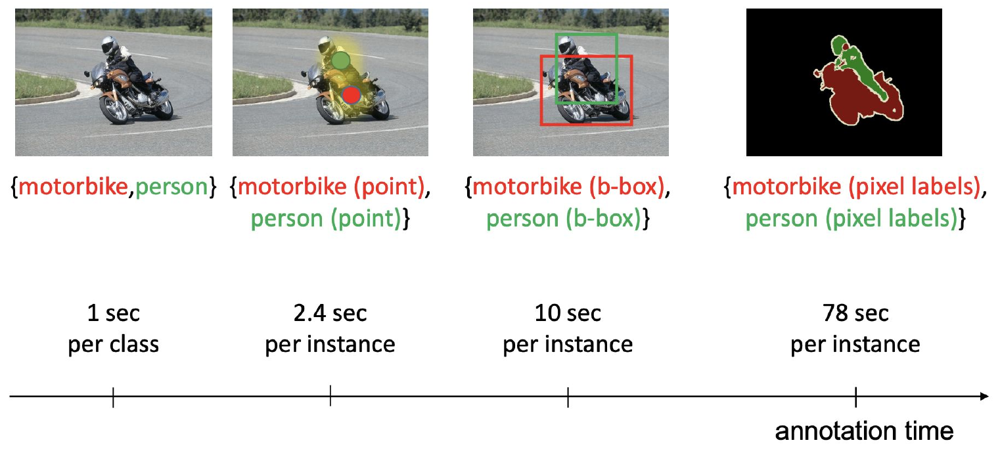
차이semi-supervised는 label의 양이 모자란 문제고, weak supervision은 label의 정밀도가 모자란 문제야.
한 줄사진마다 어떤 label이 붙었나로 설정을 네 개로 나눠.
- (a) Supervised: 모든 사진에 box가 있어.
- (b) Weakly supervised: 모든 사진에 image label만 있어.
- (c) Weakly semi-supervised: "learns from a set of labeled (bounding box) and weakly labeled (image label) images."
- (d) Semi-supervised: "learns from a set of labeled (bounding box) and unlabeled images."

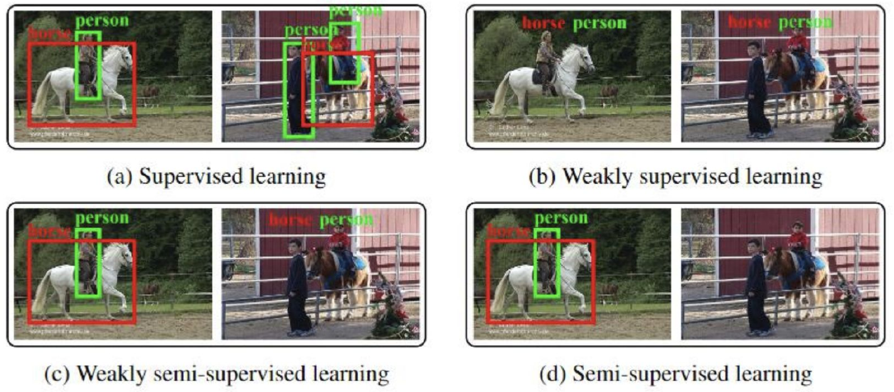
차이(c)와 (d)는 box 있는 사진은 같고 나머지 사진이 달라. (c)는 image label이 있고, (d)는 아무 label도 없어.
한 줄box가 있는 다른 class의 지식을 box가 없는 class로 옮겨.
핵심"Learns detectors for auxiliary categories with regular supervision (bounding box)". 그리고 "Transfers the knowledge from auxiliary categories to weakly supervised categories" (p.6). auxiliary categories = 도우미로 쓰는 class야.

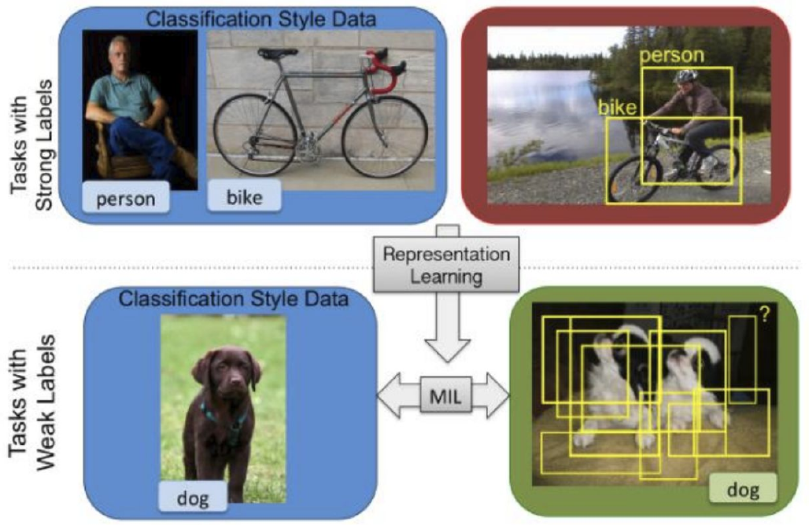
차이순수 weak supervision과 달리, 다른 class에는 box label이 필요해.
한 줄pretext task(label 없이 data에서 정답을 만드는 연습 문제)로 representation을 배우고 weight를 옮겨 써.
핵심"Defines a pretext task and learns representations in an unsupervised way", "Transfers pre-trained weights to a downstream task" (p.7). 그림 예시는 L02의 relative position과 rotation이야.
차이슬라이드가 짚는 건 "Transfer-learning requires regular annotations"야. pre-train엔 label이 없어도 downstream에 옮긴 뒤엔 일반 annotation이 필요해. weak supervision은 그 annotation 자체를 약하게 만드는 쪽이야.
한 줄보통 처음부터 학습하지 않고 pretrained network를 weak label로 fine-tuning해.
"Typically uses pretrained networks and fine-tunes them by using weak supervision" (p.8).
차이p.7 self-supervised의 fine-tune은 regular annotation을 쓰고, 여기선 weak label을 써.
Challenges: 왜 어렵나 (p.9–13)
한 줄같은 class 안에서도 생김새가 크게 달라서 물체 찾기는 원래 어려워.
- Intra-class variations(같은 class 안의 차이): Appearance(겉모습), Viewpoint(보는 방향), Scale(크기), Aspect ratio(가로세로 비율).
- Background clutter: 배경이 복잡해서 물체가 묻혀.
- Occlusions: 다른 물체에 가려져.
차이슬라이드 제목이 "Generic Object Recognition"이야. 이건 물체 인식 일반의 어려움이고, 다음 카드의 co-occurrence가 image label만 있을 때의 애매함이야 (p.40).
한 줄늘 같이 나오는 것들은 image label만으로 갈라낼 수 없어.
- Parts vs object (p.11): What is a person? a) Face b) Face + upper body c) Face + whole body ☺
- Context vs object (p.12): What is a train? a) Rail b) Train + Rail c) Train ☺
- Multiple vs single instance (p.13): What is a sheep? a) 2 sheeps b) 3 sheeps + grass c) 1 sheep ☺
왜 어려워?"person" label이 붙은 사진엔 늘 얼굴이 있어. 그럼 얼굴 box만 골라도 label을 맞힐 수 있어서, 무엇이 "person 전체"인지 알 근거가 없어. 그래서 p.40은 "WSOD is an ill-posed problem and ambiguous due to part/whole and co-occurence issues"라고 정리해. ill-posed = 주어진 정보만으론 답이 하나로 안 정해지는 문제야.
차이세 경우 모두 정답은 물체 하나 전체야. 오답은 그보다 작거나(부품), 크거나(배경까지 포함 · 여러 마리를 같이 묶음), 물체가 아닌 곳(Rail)이야.
WSOD의 기본 틀: Multiple-Instance Learning (p.14–21)
한 줄사진을 후보 box들의 묶음으로 보고, 묶음 전체의 label만으로 학습하는 틀이야.
"MIL reformulates weakly supervised object detection as a bag classification problem, where each image is a bag of candidate windows, and only the bag label (not the instance labels) is known." (p.15)
핵심bags = images, instances = windows. Goals는 두 개야: find true positive instances, train window classifier.

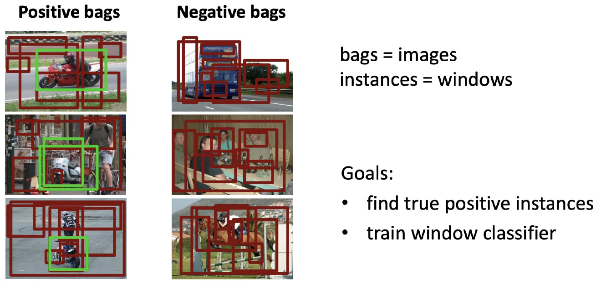
왜 돼?MIL의 표준 가정 때문이야(슬라이드 문장은 아니야). positive bag엔 positive instance가 적어도 하나 있고, negative bag의 instance는 전부 negative야. 그래서 negative 사진이 "이건 물체가 아니야"를 공짜로 알려 줘.
차이일반 분류는 샘플마다 label이 있어. MIL은 묶음마다 label이 있고 낱개 label은 몰라.
한 줄고른 box로 detector를 학습하고, 그 detector로 box를 다시 고르는 걸 반복해.
어떻게"Two step alternating optimization" (p.16).
- Initialize: 사진마다 첫 box를 잡아.
- Re-train: 지금 box로 detector를 학습해.
- Re-localize: 학습한 detector로 box를 다시 골라.
- 2–3을 반복해.

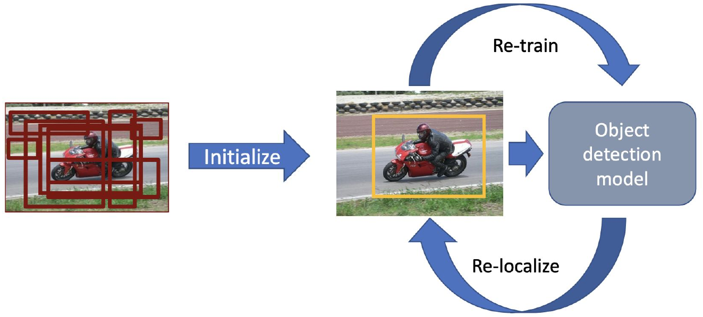
문제Challenges는 두 개야. "Sensitive to initialization (local minimum)", "Overfitting (locking) to predicted windows" (p.16). locking = 틀린 box로 학습하면 그 box 점수가 올라서 같은 box가 계속 뽑히는 악순환이야 (p.23). 이 강의의 나머지는 대부분 이 두 문제를 푸는 얘기야.
차이L07 self-training과 같은 구조야. 자기 예측이 다음 target이 되고, locking은 confirmation bias(틀린 자기 예측을 스스로 강화하는 것)와 같은 모양이야. 다른 점은 고르는 대상이 class가 아니라 box라는 거야.
한 줄bag 안의 window를 sliding window나 object proposal로 만들어.
- Sliding windows: >100, dense, "translations, scales and aspect-ratios (4D space)". 4D = 가로 위치, 세로 위치, 크기, 가로세로 비율이야. ← slide의 ">100"은 "dense"하고도, proposal "~2k"하고도 안 맞아. 숫자가 잘렸을 수 있지만 실제 값은 몰라. 시험은 슬라이드 표기로 봐.
- Object proposals: Selective Search and Edge Boxes, ~2k per image, "Commonly used in WSOD".

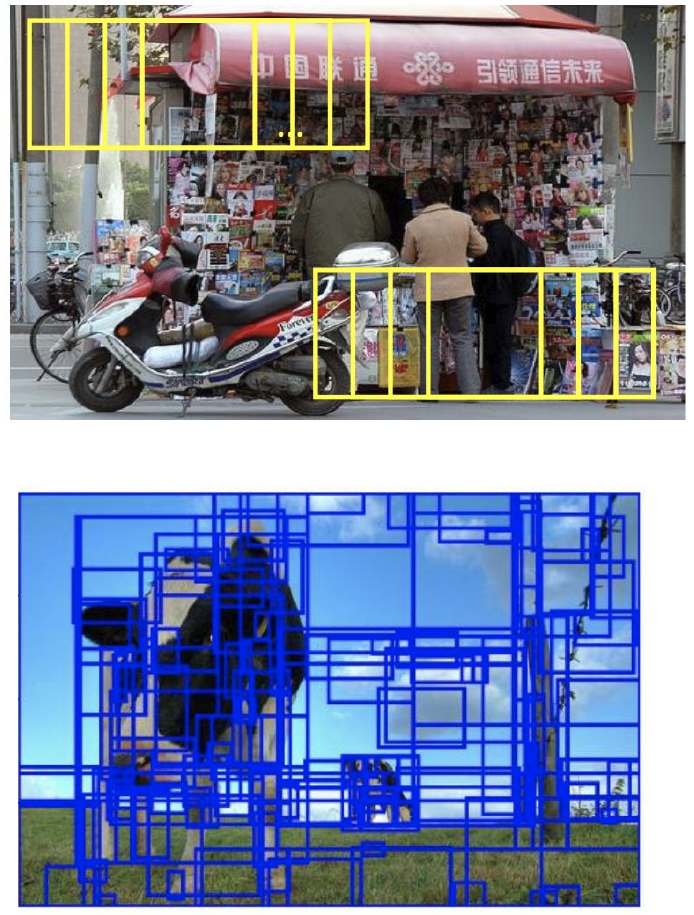
차이sliding window는 규칙적으로 전부 훑고, proposal은 물체처럼 보이는 자리만 골라 둬.
한 줄첫 box를 어떻게 잡나. 쉬운 방법은 사진 전체, 좋은 방법은 사진끼리 비교하기야.
문제pipeline이 initialization에 민감해서 시작점이 나쁘면 local minimum에 빠져.
어떻게Simple strategies는 Whole image, Whole image minus a margin이야. Song은 "constructs a graph to find initial boxes"라서 세 조건으로 box를 골라.
- relevant: occur in many positive images
- discriminative: dissimilar to the boxes in the negative images
- complementary: capture multiple modes

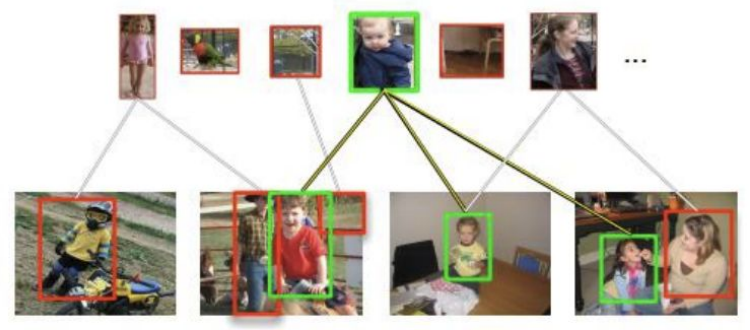
차이Simple은 사진 한 장만 보고 정해. Song은 positive 사진들과 negative 사진들을 서로 비교해서 정해.
한 줄지금 detector가 제일 높게 매긴 window 하나를 positive로 골라.
arg maxb A(xb)
b = proposal, A = appearance model(window 점수를 내는 모델), xb = 그 proposal의 features야. "Pick the highest scoring window as positive", "Only one positive instance per image" (p.20).

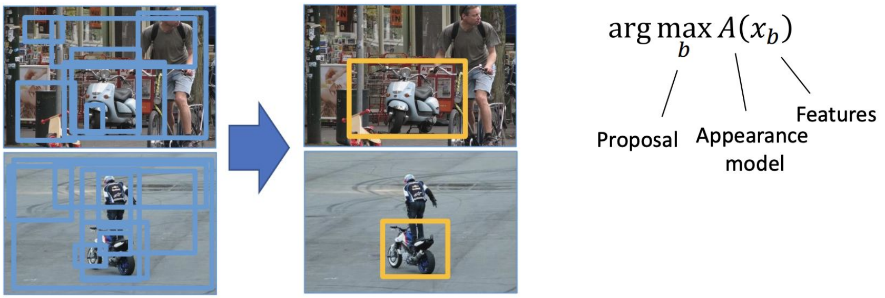
차이Re-localize는 detector를 고정하고 box를 바꿔. Re-train은 box를 고정하고 detector를 바꿔.
한 줄고른 window는 positive로, negative 사진의 window는 전부 negative로 detector를 학습해.
핵심"Hinge and cross-entropy loss" (p.21). 왼쪽이 hinge 조건, 오른쪽이 cross-entropy 쪽 항이야. hinge = 점수가 margin을 넘으면 loss 0, 못 넘으면 모자란 만큼 벌점을 주는 loss야. margin(Δ) = 간신히 맞히는 걸로 안 치고 이만큼 넘으라는 여유 폭이야.
For positive images: maxb A(xb) > Δ (Δ: margin) or log(Softmax(maxb A(xb)))
For negative images: maxb A(xb) < −Δ or log(1−Softmax(maxb A(xb)))
← slide의 log 항은 키워야 할 목적식이야. loss로 쓰려면 부호를 뒤집어. Softmax 인자도 하나만 적혀 있어.
왜 돼?두 줄 다 max인 게 포인트야. positive 사진은 제일 높은 window가 Δ를 넘으면 "적어도 하나 있다"가 돼. negative 사진은 제일 높은 window마저 −Δ 아래면 모든 window가 −Δ 아래가 돼. max 하나로 "전부 negative"까지 표현한 거야.
차이supervised detection(eg Faster-RCNN, box label로 학습하는 대표 detector)과 다른 점은 둘이야. "Only 1 positive instance is used in each positive image", "No negative instances from positive image" (p.21). 이 목록은 WSDDN 한계로 p.35에 또 나와.
MIL 보강 1: 틀린 box에 굳지 않게 (p.22–26)
한 줄window 하나에 다 걸지 말고 점수 높은 여러 window에 나눠 걸어 ("Hedge your bets on multiple proposals").
문제hard max는 window 하나만 고르니까 그 선택이 틀리면 그대로 굳어. 그리고 positive를 하나밖에 못 써.
핵심"Relax hard max into soft-max (log-sum-exp)" (p.22). Re-train 조건에서 max를 log-sum-exp로 바꿔. 여기서 soft-max는 값 하나를 내는 부드러운 max야. p.21의 Softmax처럼 확률을 내는 함수와 이름만 같아.
For positive images: log Σb exp A(xb+) > Δ
For negative images: log Σb exp A(xb−) < −Δ
xb+ = positive 사진의 window feature, xb− = negative 사진의 window feature야.
왜 돼?슬라이드엔 결과 식만 있어서 아래는 보충이야. window가 B개면 max ≤ LSE ≤ max + log B라서 log-sum-exp(LSE)는 max의 부드러운 버전이야. 미분하면 ∂LSE/∂Ab = softmax(A)b라서 gradient가 eA 비율(softmax 비중)대로 나뉘어. 점수 자체의 비율이 아니야.
설명용 점수 A = [3, 2.9, −1]. hard max의 gradient는 [1, 0, 0]이라 2.9짜리 window는 아무 신호도 못 받아. LSE의 gradient는 [0.52, 0.47, 0.01]이라 비슷한 두 window가 둘 다 배워. LSE 값은 3.65로 max 3과 상한 4.10 사이야.

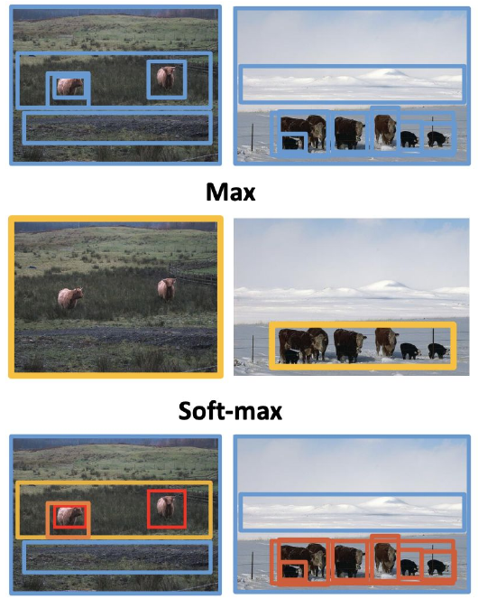
차이결과는 "Less sensitive to initialization", "Leverages multiple positive samples during training"이야. max는 window 하나, soft-max는 window 여러 개를 살려.
한 줄쉬운 샘플부터 학습하고, localization이 믿을 만해지면 어려운 샘플을 늘려.
문제"In conventional WSOD, the initial localization results are crucial." 처음에 틀린 box를 고르면 detector가 그 box로 학습되고, 같은 box가 또 뽑히는 vicious cycle(locking)이 돼 (p.23).
핵심"Inspired from Curriculum Learning". 어려운 샘플까지 처음부터 다 쓰지 말고, "train progressively, beginning with easy samples".
어떻게Easiness measures for WSOD는 세 개야.
- Selection of samples via confidence of max scoring window
- Selection of window space by allowing smaller windows
- Selection of samples via intercategory competition
차이Relaxing max는 window를 고르는 방식을 바꾸고, self-paced는 샘플을 쓰는 순서를 바꿔. L07 FreeMatch의 올라가는 threshold도 같은 curriculum 계열이야.
한 줄어떤 사진의 box는 그 사진으로 학습하지 않은 detector가 골라.
문제"Detector overfits into the given proposal". 자기가 학습한 box엔 점수가 높게 나와서 그 box를 또 고르게 돼.
핵심"the detector performing localization for an image must be one that has not been trained on that image." cross-validation처럼 해 (p.24).
어떻게"Train using positive examples in all folds but k, and all negative examples".
- positive 사진을 K개 fold로 나눠.
- fold k를 뺀 positive + negative 전부로 detector를 학습해.
- 그 detector로 fold k의 사진만 re-localize 해.
- k를 바꿔 가며 반복해.

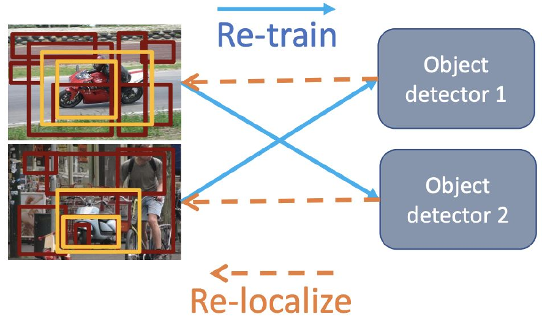
왜 돼?처음 보는 사진에 매긴 점수라서 외운 box에 끌려가지 않아.
차이나누는 건 positive뿐이고 negative는 전부 써. 다른 모델의 판단을 빌린다는 점은 L07 DivideMix의 co-divide(상대 network의 분할을 쓰기)와 닮았어.
한 줄사진마다 따로 고르지 말고 positive 사진들 사이에서 서로 닮은 window를 같이 골라.
핵심"Similarity between selected windows across positive images". 같은 class면 고른 box끼리도 닮아야 한다는 거야. 이걸 CRF로 풀어.

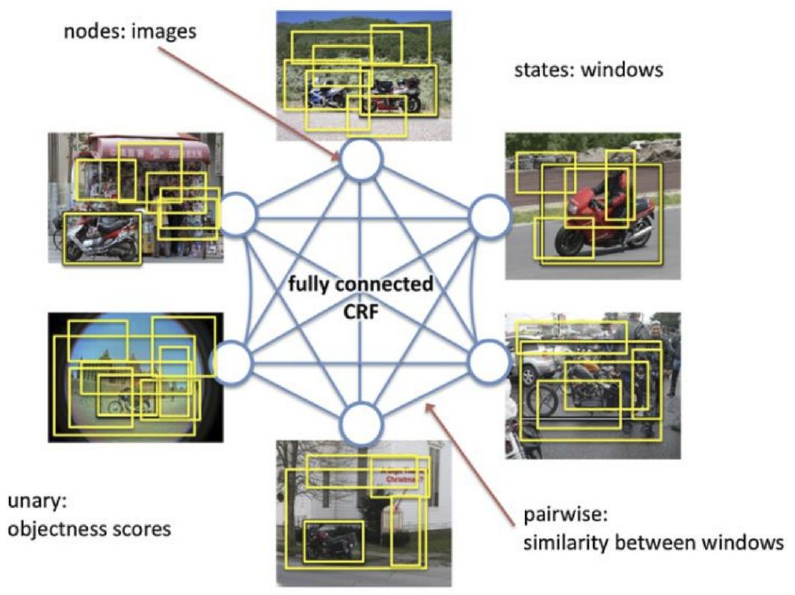
문제장점은 "Less overfitting"이야. 단점은 둘이야.
- Expensive to optimize: All positive images must be connected (N² similarities).
- Ignores intra-class variation: "The assumption that all objects must be similar is unrealistic."
차이앞의 방법들은 사진 한 장씩 box를 고르는데, 이건 모든 positive 사진의 box를 한꺼번에 골라.
한 줄"전부 닮아야 해"를 "그룹 안에서만 닮으면 돼"로 풀어.
문제Pairwise similarity는 intra-class variation을 무시해. 전투기와 여객기는 둘 다 airplane인데 안 닮았어.
- Sub-categories: Clustering via pLSA(probabilistic Latent Semantic Analysis). (+) Modeling intra-class variations. (−) Sensitive to number of clusters.
- Exemplars: Pick representative samples. (+) No need to set number of clusters.

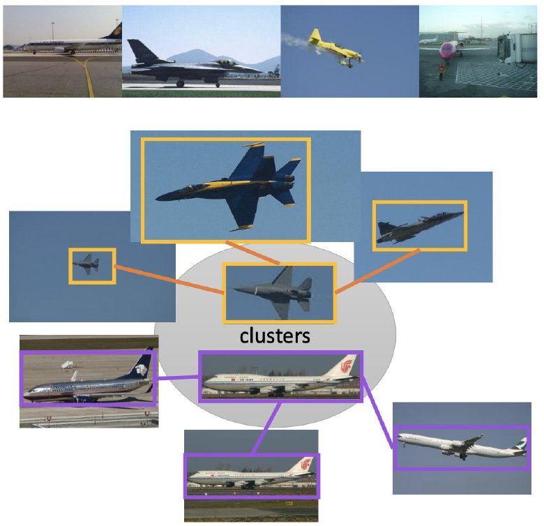
차이Sub-categories는 cluster 수를 정해야 하고, Exemplars는 안 정해도 돼.
MIL 보강 2: 추가 단서와 prior (p.27–31)
여기부턴 image label 말고 다른 단서를 끌어와. box 둘레의 context, 물체다움, 크기, 움직임 같은 거야. image label만으론 답이 안 정해지니까(ill-posed), 이런 단서로 후보를 줄이는 거야.
한 줄box 바깥의 배경도 단서로 써.
핵심"Background provides contextual cues for recognition", "Better separation of foreground and background" (p.27).
- Additive: select a ROI that is semantically compatible with its context. 주변과 잘 어울리는 ROI를 골라.
- Contrastive: select a ROI that is outstanding from its context. 주변에서 튀는 ROI를 골라.

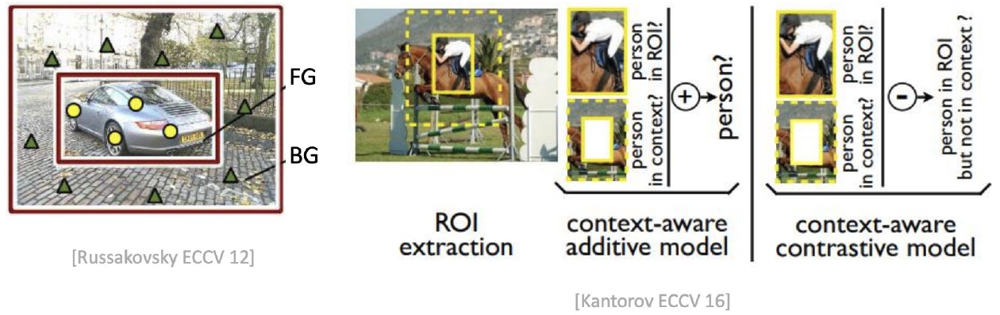
차이additive는 context가 ROI를 뒷받침하고, contrastive는 ROI가 context와 달라야 해. L03의 contrastive learning과는 이름만 같아.
한 줄class와 상관없이 "물체처럼 생겼나" 점수를 box 고를 때 같이 봐.
arg maxb λA(xb) + (1−λ)Obj(b)
A = appearance model 점수, Obj(b) = proposal의 objectness(EdgeBoxes, Selective Search, BING으로 구해), λ = 둘의 비중이야. λ = 1이면 원래 Re-localize고, λ가 작을수록 objectness를 더 믿어. ← slide엔 Obj(b) 설명에 "proposal의"라는 한국어가 섞여 있어.
왜 돼?세 가지를 해 줘. "Generates a small set of accurate object proposals", "Steers re-localization towards objects and away from background", "Pushes towards whole objects instead of sub-regions" (p.28).

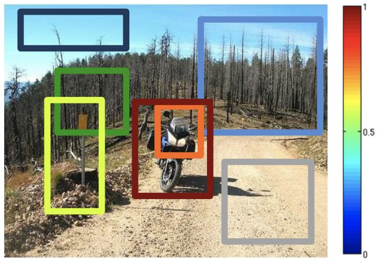
차이A는 class별 점수고, Obj는 "object of any class"에 대한 class-independent prior야.
한 줄사진을 변환하면 예측도 똑같이 변환돼야 해.
"The predicted output should be equivariant to image transformations" (p.29).

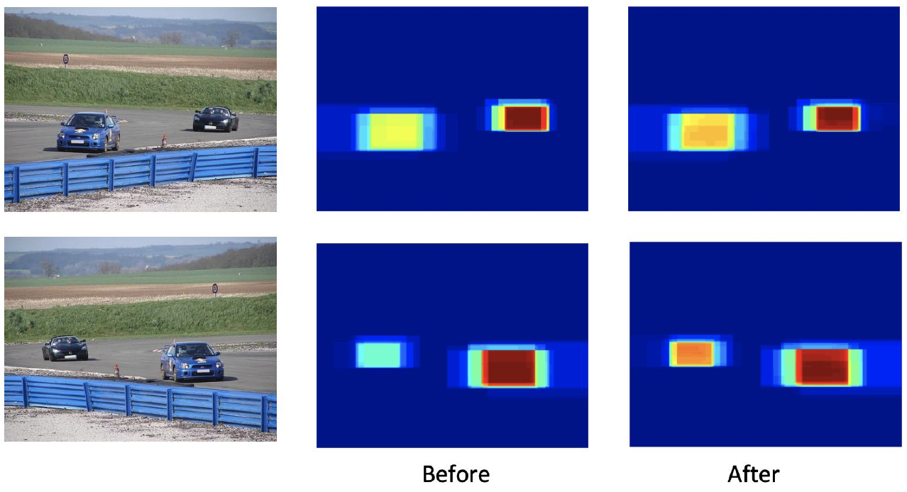
차이invariant는 입력을 바꿔도 출력이 그대로고, equivariant는 출력이 같이 바뀌어. box 위치는 사진을 뒤집으면 같이 뒤집혀야 하니까 equivariant가 맞아.
한 줄큰 물체부터 배우고, 추정 크기에 맞는 proposal에 가중치를 줘.
핵심"Curriculum learning (bigger objects down to smaller ones)", "Weight object proposals according to estimated size" (p.30). 슬라이드 설명: "thereby reducing localization errors caused by object parts".

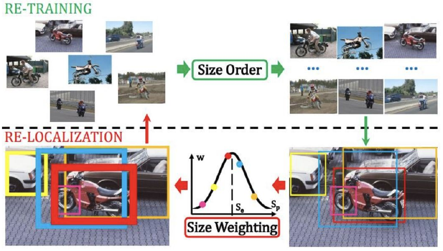
차이self-paced의 쉬움 기준이 confidence 같은 것이었다면, 여기선 물체 크기가 기준이야. 대신 "Requires training a size estimator from a small set", 즉 size estimator를 학습할 작은 set이 따로 필요해.
한 줄비디오에서 움직이는 덩어리를 찾아 image detector의 pseudo box로 써.
어떻게tube = 시간을 따라 이어지는 box의 연속이야.
- extracts candidate spatio-temporal tubes based on motion segmentation
- selects one tube per video jointly over all videos
- uses objectness to reduce object candidates
- applies a domain adaptation method to address the video/image gap

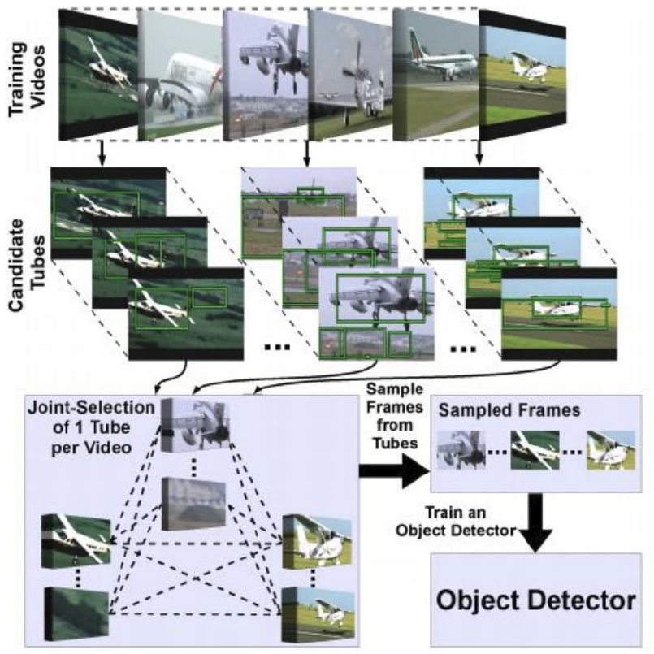
차이다른 단서는 사진 한 장에서 나오는데, 이건 시간 정보를 써. (+) Motion cues for object boundaries. (−) Noisy data.
보강 열한 가지를 한 표로 모으면 이래. 슬라이드 제목은 전부 "Re-Localization and Re-Training"이고, 맨 왼쪽 열은 슬라이드 첫 줄에 붙은 표현이야.
| 슬라이드 표현 | 방법 | 한 줄 | 슬라이드의 약점 |
|---|---|---|---|
| More robust optimization | Relaxing max (p.22) | window 여러 개에 나눠 걸기 | 안 적힘 |
| More robust optimization | Self-paced (p.23) | 쉬운 샘플부터 | 안 적힘 |
| More robust re-localization | Multifold MIL (p.24) | 안 본 detector가 box 고르기 | 안 적힘 |
| Pairwise similarity | Pairwise (p.25) | 사진끼리 닮은 box 같이 고르기 | N² 비용, intra-class variation 무시 |
| Pairwise similarity | Sub-categories (p.26) | cluster 안에서만 닮기 | cluster 수에 민감 |
| Pairwise similarity | Exemplars (p.26) | 대표 샘플 고르기 | 안 적힘 |
| Additional cues | Context (p.27) | box 바깥도 단서로 | 안 적힘 |
| Additional cues | Objectness (p.28) | class 무관 물체 점수 섞기 | 안 적힘 |
| Priors | Equivariance (p.29) | 변환하면 예측도 같이 변환 | 안 적힘 |
| Priors | Scale (p.30) | 큰 물체부터 + 크기 가중치 | size estimator 학습 필요 |
| Priors | Motion (p.31) | 비디오 움직임으로 box 찾기 | Noisy data |
Deep and End-to-End WSOD (p.33–39)
지금까진 CNN을 feature 뽑는 도구로만 쓰고 그 바깥에서 고르기와 학습을 번갈아 돌렸어. 이제 그 과정을 network 안으로 옮겨. 네 방법은 한계 하나를 고치면 다음 한계가 보이는 순서로 이어져.
한 줄proposal마다 "무슨 class인가"와 "이 class엔 어느 proposal인가"를 따로 매겨 곱하고, 합친 값을 image label로 학습해.
문제"Previous work uses CNN as black-box feature extractor" (p.34).
핵심"First end-to-end WSOD method, finetunes a pre-trained deep network". RoI-Pooling을 쓰고, Two stream architecture야.
- Conv layers로 feature map을 뽑고, RoI-Pooling으로 proposal별 feature를 만들어.
- Classification stream: "Associates each region with a class score". region 하나 안에서 class끼리 비교해.
- Localization stream: "Compares regions for each class". class 하나 안에서 region끼리 비교해.
- 두 점수를 곱해서 proposal 점수를 만들고, proposal을 합쳐 image-level 점수를 만들어.

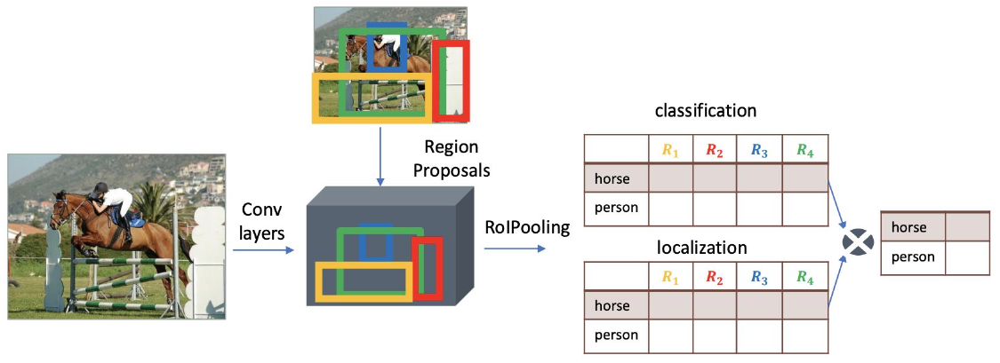
식슬라이드엔 식이 없고 p.36 그림에 구조만 있어(논문 보충). σclass = class 방향 softmax, σdet = region 방향 softmax, xR = σclass(xc) ⊙ σdet(xd), yc = Σr xRcr. xc, xd = 두 stream의 fc layer가 낸 점수표, xR = region별 최종 점수, yc = class c의 image-level 점수, ⊙ = 칸끼리 곱하기야. loss는 class마다 binary log-loss를 더한 거야. image 단계에선 softmax를 안 써. 한 사진에 class가 여럿일 수 있어서야.
왜 돼?yc를 키우려면 class c에 맞는 proposal의 곱이 커져야 해. 그래서 image label만 줘도 proposal별 점수가 저절로 생겨. p.36은 이걸 "implicit instance scoring"이라고 불러.
결과(+) State-of-the-art results with VGG-F (~AlexNet) (62% of supervised). (+) End-to-end learning + No custom deep learning layers. (−) Detects discriminative parts rather than whole object extent. (−) Groups multiple instances together.

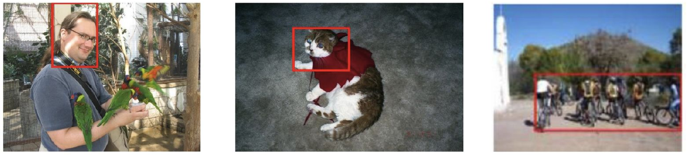
문제Limitations (compared to the supervised case, eg Faster RCNN)는 세 개야 (p.35). 뒤의 방법들이 이걸 하나씩 다뤄. 어느 방법이 어느 한계를 다루나는 이 파트 끝의 비교표에 있어.
- It does not leverage multiple positive instances in positive images
- It does not exploit negative instances in positive images
- It does not learn bounding box regression. bounding box regression = 고른 proposal의 좌표를 조금씩 고쳐서 물체에 더 딱 맞는 box로 만드는 학습이야(슬라이드 밖 기초). 이게 없으면 proposal 모양을 그대로 써.
차이classical MIL은 고르기와 학습을 번갈아 돌리고, WSDDN은 network 하나를 end-to-end로 학습해. 앞의 두 limitation은 Re-train의 p.21 목록과 같아.
한 줄WSDDN 점수로 proposal에 pseudo label(L07처럼 사람이 아니라 모델이 만든 가짜 정답)을 달고, 그걸로 instance classifier를 학습하는 단계를 여러 번 쌓아.
문제"WSDDN learns to classify images based on implicit instance scoring". 학습 목표가 사진 분류라서 instance 분류는 간접적이야.
핵심"OICR learns to classify instances". "Initially uses WSDDN to set instance labels", "Iteratively refines them by using an instance classifier" (p.36).
WSDDN → Pseudo labels → Instance classifier → Better pseudo labels → Better instance classifier → ..
- WSDDN 구조가 proposal scores를 내.
- 앞 단계 점수로 highest scoring proposal과 surrounding ones를 positive로 잡아 (p.37). 이걸 사진에 있는 class마다 하고, 나머지 proposal은 background label로 둬(둘 다 논문 보충. 슬라이드엔 그림에 Supervision 화살표만 있어).
- 다음 단계의 Fc layer + Softmax over classes가 이 label을 맞히게 학습해.
- 그 단계의 점수로 또 다음 단계의 pseudo label을 만들어. 1-st부터 K-th까지 이어져.

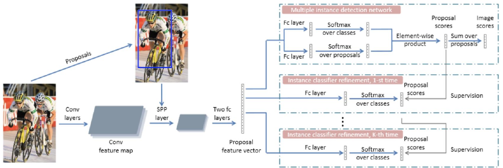
왜 돼?단계가 뒤로 갈수록 target이 조금씩 나아져서 좋은 classifier가 더 좋은 pseudo label을 만들어.
차이WSDDN은 사진을 분류해서 간접적으로 배우고, OICR은 instance를 직접 분류해. L07 pseudo labeling을 instance 단위로, 한 network 안에서 online으로 하는 거야. Noisy Student처럼 모델을 다시 학습하는 반복이 아니야.
한 줄점수 높은 proposal을 cluster로 묶고, cluster 하나를 pseudo object(모델이 "여기 물체 하나가 있다"고 치는 단위) 하나로 써.
문제"Observation: There can be multiple positive instances in an image". 그런데 "OICR considers only the highest scoring proposal + surrounding ones as positives". 즉 "OICR uses a single pseudo object per image"야.
어떻게edge를 잇는 기준은 슬라이드에 없어.
- "builds an undirected graph of top-ranking proposals"
- "iteratively selects vertices which have most connections to be the cluster centres"
- cluster 하나를 독립된 pseudo object로 삼아 instance-level supervision을 줘.

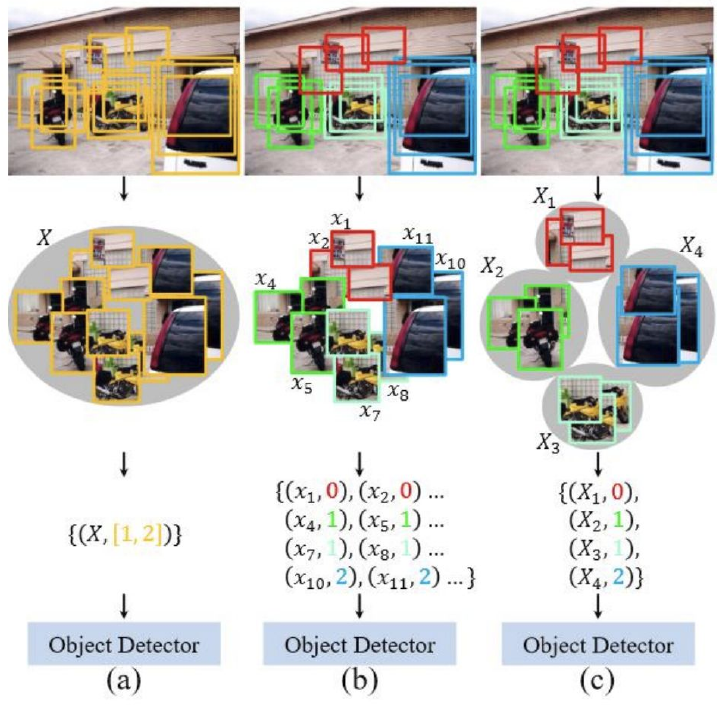
차이OICR은 pseudo object가 사진당 하나(논문은 class마다 하나, 같은 class 물체가 둘이어도 하나만 잡아)야. PCL은 cluster 하나가 pseudo object 하나라서 사진당 여러 개가 될 수 있어. 그래서 multiple positive instances를 쓸 수 있어.
한 줄제일 눈에 띄는 부위를 일부러 가려서 detector가 물체 전체를 보게 만들어.
문제discriminative part 문제야. "Unlike OICR and PCL that mainly improve pseudo-label quality, this work explicitly addresses the discriminative-part problem." (p.38)
핵심"Builds on WSDDN and OICR". 세 가지를 더해.
- "Picks top p % of the highest scoring proposals and surrounding ones as positives"
- ConcreteDropBlock: "a data-driven and parametric drop-out to drop the most relevant regions"
- Adversarial optimization
w*, θ* = arg minw maxθ ΣI Limg(w, θ) + Lroi(w, θ)
슬라이드엔 기호 정의가 없어서 논문으로 채웠어. w = detector parameter, θ = Concrete DropBlock parameter, ΣI = 학습 사진 전체에 대한 합이야. detector는 loss를 줄이고, DropBlock은 loss를 키워. Limg는 image label loss, Lroi는 pseudo label로 받는 proposal 단위 loss야.

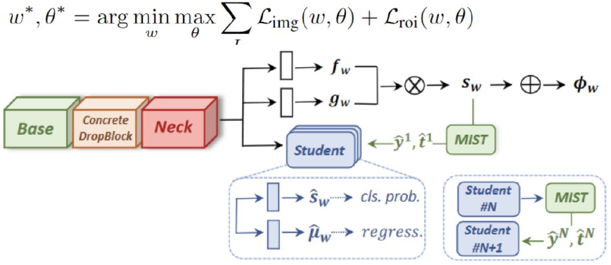
왜 돼?얼굴이 가려지면 얼굴만으론 loss가 안 내려가. 그래서 몸통까지 봐야 해. "the detector is forced to attend to the entire object rather than only its most salient parts" (p.38). p.39는 결과 그림이야(Successful cases, Failure cases).
차이OICR · PCL은 pseudo label을 다듬고, Ren은 network 중간의 feature(그림의 Base와 Neck 사이)를 가려. 보통 dropout은 균등 무작위지만 이건 학습된 확률 map에서 샘플링해서 제일 중요한 영역을 더 자주 지워 (논문 보충). 그림의 regress. head는 WSDDN에 없던 bounding box regression이야. target은 진짜 box가 아니라 pseudo box야(논문 보충).
한 줄WSOD는 정보가 모자란 문제라서 objectness, prior, end-to-end 학습으로 메워 왔어.
- WSOD is an ill-posed problem and ambiguous due to part/whole and co-occurence issues.
- WSOD training is sensitive to initialization and prone to overfitting.
- Remarkable progress due to objectness and region proposals, incorporating prior knowledge and additional cues, end-to-end learning.
- Addressing the inherent ambiguity requires better objectness measures and stronger additional cues.
차이첫 두 문장이 문제고, 셋째가 지금까지의 답, 넷째가 앞으로 할 일이야. T/F로 쓰기 좋은 문장들이야. ← slide의 "co-occurence"는 오타야. 답안엔 co-occurrence로 써.
네 방법을 "instance target을 어떻게 만드나"로 비교하면 이래. 표 내용은 슬라이드와 그림을 같이 읽어 정리한 거야. 불릿에 이 순서로 적혀 있진 않아.
| 비교 축 | WSDDN | OICR | PCL | Ren |
|---|---|---|---|---|
| instance target | 없음 (image label만, implicit) | 앞 단계의 pseudo label | cluster별 pseudo label | top p% pseudo label + pseudo box |
| positive 고르기 | 고르지 않음 | 최고 proposal + 주변 | graph로 묶은 cluster | top p% + 주변 |
| multiple positives | 못 씀 | 사진당 pseudo object 하나 (슬라이드 표현, 논문은 class마다 하나) | 씀 (cluster 여러 개) | 씀 (top p%) |
| positive 사진 안의 negative | 못 씀 | background label (논문) | 그림의 label 0 | 슬라이드에 없음 |
| box regression | 없음 | 슬라이드에 없음 | 슬라이드에 없음 | 있음 (regress. head) |
| discriminative part | 문제 그대로 | 주로 label 품질 개선 | 주로 label 품질 개선 | Concrete DropBlock으로 직접 대응 |
슬라이드 밖 비유라서 시험 범위가 아니야. 각 줄의 단서까지 같이 봐.
- bag label ↔ episode-level sparse reward. 어느 window(timestep)가 잘한 건지 모르는 credit assignment야. 단 MIL은 "적어도 하나"고 return은 합이야.
- Re-train / Re-localize ↔ generalized policy iteration. 고정한 box로 fit하고, greedy argmax로 고르기를 개선해. hard EM으로 봐도 돼. 단 tabular policy iteration은 optimal policy로 수렴하지만, 여기선 local minimum에 갇힐 수 있어 (p.16).
- locking ↔ exploration 없는 greedy policy + bootstrapping error 누적.
- hard max → log-sum-exp ↔ hard Bellman max → soft value V = α log Σ exp(Q/α) (soft Q-learning, SAC(Soft Actor-Critic)). 같은 연산이고 여기선 α = 1이야.
- Multifold MIL ↔ cross-fitting. 고르는 detector가 그 샘플로 fit되지 않았어. Double Q와는 "고르기를 자기 추정에서 떼어 낸다"는 동기만 닮았어. Double Q는 고르는 쪽과 값을 매기는 쪽을 나누는 거라서, 샘플을 빼고 고르는 multifold와 메커니즘이 달라.
- Self-paced · Scale prior ↔ curriculum RL.
- λA + (1−λ)Obj ↔ 점수에 task-agnostic prior 섞기. 단 potential-based shaping은 아니야.
- OICR 단계 사슬 ↔ 각 head의 target이 앞 head에서 오는 bootstrapped target chain. 단 EMA는 없어.
- Ren의 min-max ↔ robust adversarial RL. adversary가 방해하고 agent가 버텨. Concrete DropBlock이 마스크를 뽑을 때 쓰는 Gumbel-Softmax(논문 보충, 뽑기를 미분 가능하게 만드는 방법) ↔ relaxed discrete action.
- Weak supervision: 약한 쪽은 train annotation이고, 기준은 test 때 필요한 출력이야 (p.4).
- bags = images, instances = windows. 아는 건 bag label이고 instance label은 몰라 (p.15).
- Semi = labeled + unlabeled. Weakly semi = labeled + weakly labeled (p.5).
- Re-train은 detector를 바꾸고 Re-localize는 box를 바꿔 (p.16). Challenges = initialization + overfitting(locking).
- Re-train에서 positive 사진은 positive 1개, positive 사진의 negative는 없음 (p.21).
- Relaxing max는 window 여러 개를 살려서 initialization에 덜 민감해져 (p.22).
- Multifold: positive는 all folds but k, negative는 전부. box를 고르는 detector는 그 사진을 본 적 없어야 해 (p.24).
- Additive = context와 compatible, Contrastive = context에서 outstanding (p.27).
- Objectness는 class-independent, "object of any class" (p.28).
- Scale 순서는 bigger → smaller (p.30). 반대로 쓴 지문 조심.
- WSDDN: classification stream은 region마다 class를 비교하고, localization stream은 class마다 region을 비교해 (p.34). bounding box regression은 안 배워 (p.35).
- OICR = 사진당 single pseudo object. PCL = cluster 하나가 pseudo object 하나라서 사진당 여러 개 (p.37).
- Ren: w는 min, θ는 max. Concrete DropBlock은 most relevant regions를 지워 (p.38). least가 아니야.
p.40은 "better objectness measures and stronger additional cues"가 필요하다고 끝나. 다음 강의는 W11 Weakly-Supervised II(11/12)인데, p.41엔 "Weakly supervised .."까지만 적혀 있어서 내용은 아직 몰라. 기말 후보로 적어 둔 CAM은 L08엔 없었어. W11 자료가 오면 다시 확인해.
셀프 체크: 영어로 먼저 써 보고 열어
T/FIn MIL for WSOD, each window is a bag, each image is an instance, and the instance labels are known.
False. Why: In WSOD, each image is a bag of candidate windows, and only the bag label is known. Corrected: In MIL for WSOD, each image is a bag, each window is an instance, and only the bag label is known. bag과 instance를 뒤집고, 아는 label까지 바꾼 지문이야 (p.15).
MCQWhat is the localization stream of WSDDN for?
(A) It compares class scores within each region.
(B) It compares regions for each class.
(C) It regresses bounding box coordinates.
(D) It drops the most relevant regions.
(B) The localization stream compares regions for each class, so it tells which proposal best supports that class. (A)는 classification stream이고, (C)는 WSDDN이 안 배우는 것이고 (p.35), (D)는 Ren의 Concrete DropBlock이야 (p.38). 근거 p.34.
빈칸Fill in the blank and explain the process: b_star = scores.______(), where scores holds A(x_b) for every proposal of one positive image.
argmax. This is the re-localize step of standard MIL. The detector scores every proposal, and the highest scoring window becomes the single positive instance of that image. That window is then the target for the next re-train step. 사진당 positive가 하나뿐인 이유가 이 줄이야 (p.20–21).
공통 패턴: L08에 계속 나오는 부품
방법은 많지만 질문은 두 개야. 이 표 두 개가 잡히면 "이건 어느 방법?" 문제가 거의 풀려. 강의가 늘면 표에 행이 늘어나.
왜 같은 부품이 계속 나오나
L08 내내 instance label이 없어. 그래서 어떤 방법이든 두 가지를 정해야 해.
- window 여러 개를 어떻게 하나로 모으나. label은 사진에 붙어 있는데 점수는 window마다 나오니까, 둘을 이어 줄 연산이 필요해.
- instance target을 누가 만드나. 모델이 만들면 틀린 target이 자기 강화돼(locking). 그래서 다른 단서나 다른 모델의 판단을 빌려.
window 점수를 어떻게 모으나
| 방법 | 모으는 연산 | gradient가 가는 곳 | 결과 |
|---|---|---|---|
| Standard MIL p.20–21 | max maxb A(xb) | 1등 window 하나 | 사진당 positive 하나. 처음 선택에 민감해. |
| Relaxing max p.22 | log-sum-exp log Σb exp A(xb) | eA 비율(softmax 비중)대로 여러 window (보충) | 여러 window를 살려. initialization에 덜 민감해. |
| WSDDN p.34 · 36 | softmax over proposals × softmax over classes → sum over proposals | 모든 proposal (hard 선택 없음) | hard 선택 없이 end-to-end. 대신 instance 점수가 implicit이야. |
pseudo label은 어디서 오나
| 방법 | instance target을 만드는 쪽 | target이 되는 것 | locking · target 품질 쪽 장치 |
|---|---|---|---|
| Standard MIL p.20 | 직전 detector | 1등 window | 없음 |
| Multifold MIL p.24 | 그 사진을 안 본 detector | 1등 window | held-out fold |
| Pairwise similarity p.25 | 모든 positive 사진의 joint 선택 | 서로 닮은 window | 사진 간 consistency |
| Objectness p.28 | detector + class-independent prior | λA + (1−λ)Obj 1등 window | prior가 whole object 쪽으로 밀어 줌 |
| Motion p.31 | 비디오의 motion segmentation | tube에서 뽑은 frame의 box | 사진 바깥 단서(시간) |
| WSDDN p.34 | 없음 (instance target을 안 만듦) | image label (image-level score는 target이 아니라 예측값이야) | hard 선택이 없음 |
| OICR p.36 | 앞 단계의 head | 최고 proposal + 주변 | 단계마다 refine |
| PCL p.37 | 앞 단계 점수로 만든 graph | cluster별 pseudo object | 사진 안 여러 물체 반영 |
| Ren p.38 | MIST(Multiple Instance Self-Training). 처음엔 sw, 그 뒤엔 앞 Student 점수로 만들어 (p.38 그림) | top p% + 주변, pseudo box | Concrete DropBlock으로 쉬운 부위 가리기 |
L07에선 "class pseudo label을 누가 만드나"가 핵심이었어. L08은 같은 질문을 "어느 box를 target으로 삼나"로 옮긴 거야. 표는 슬라이드와 그림을 같이 읽어 정리한 거라 불릿에 이 모양으로 적혀 있진 않아.
Pseudo code 3개: 핵심 줄만
L08 슬라이드 41장엔 Algorithm 박스나 코드 박스가 0개야. 그래도 넘어가면 안 돼. 중간고사 코드 문제 4개 중 3개(Rotation, FixMatch, Mean Teacher)가 슬라이드에 코드가 없는 방법이었어. 그래서 슬라이드의 pipeline 문장을 짧은 코드로 옮긴 카드를 만들었어.
여기엔 계열 대표 1순위 3개만 있어. 슬라이드 코드가 아니라 설명용으로 쓰고 dummy tensor로 돌려 본 코드야. 전체 8장과 빈칸 · 모범 설명은 repo의 exam/pseudocode_final.md(WS-1–WS-8)에 있어. 색이 들어간 줄이 core idea가 박힌 줄이야.
먼저: 코드 읽는 법
x.argmax()Standard MIL · OICR- 제일 큰 값의 번호를 돌려줘. 값이 아니라 index야. 번호엔 gradient가 없어서, 고른 window의 점수로만 gradient가 가.
softmax(dim=…)WSDDN- 어느 방향으로 합이 1이 되게 할지 정해. 점수표 모양이 [R, C](R = proposal 수, C = class 수)면
dim=1은 한 proposal 안에서 class끼리,dim=0은 한 class 안에서 proposal끼리 비교해. torch.no_grad()OICR- 이 블록 안 계산은 gradient 기록을 안 해. target을 만드는 계산이라서 상수로 다룬다는 걸 코드로 보여 주는 거야.
MIL 가족: 고르고 학습하기
빈칸은 한 요소이고, 무게는 과정 설명에 있어. 설명 순서는 입력 → target은 어디서 오나 → loss → 누가 update되나야.
scores = A(feats_pos).squeeze(1) # A(x_b) for every proposal of a positive image
b_star = scores.argmax() # re-localize
s_pos = A(feats_pos[b_star]).squeeze() # only one positive instance per image
s_neg = A(feats_neg).squeeze(1).max() # best window of a negative image
loss = F.relu(delta - s_pos) + F.relu(delta + s_neg) # hinge with margin delta
loss.backward() # re-train한 줄1등 window 하나를 positive로 정하고, negative 사진의 1등 window를 −Δ 아래로 밀어.
입력 → 출력positive 사진의 proposal feature, negative 사진의 proposal feature, margin delta를 받아서 hinge loss를 돌려줘.
핵심 줄
scores.argmax(): Re-localize야. 이 줄 때문에 사진당 positive가 하나뿐이야 ("Only one positive instance per image", p.20)..max(): negative 쪽 1등까지 −Δ 아래로 밀면 모든 window가 그 아래가 돼 (p.21).
core idea어느 window가 positive인지는 사람이 아니라 현재 detector의 argmax가 정해. 그래서 틀리면 locking이 돼.
알아보는 법argmax로 하나만 고르고 hinge(F.relu)를 써. 이 코드엔 softmax가 없어. 단 p.21엔 Softmax를 쓰는 cross-entropy 형태도 같이 있어.
End-to-end 가족: network 안에서 합치기
두 카드는 이어져. WSDDN의 proposal 점수 s가 OICR 첫 단계의 s_prev가 돼.
s_cls = fc_cls(x).softmax(dim=1) # x: [R, D] region features -> [R, C]
s_det = fc_det(x).softmax(dim=0) # localization stream
s = s_cls * s_det # proposal scores [R, C]
y = s.sum(dim=0) # image-level scores [C]
loss = F.binary_cross_entropy(y.clamp(0, 1), labels)
loss.backward()한 줄class 비교와 proposal 비교를 곱하고, proposal을 합쳐서 image label로 학습해.
입력 → 출력proposal feature x([R, D])와 image label labels([C], 0 또는 1)를 받아서 loss를 돌려줘. s가 곧 proposal별 detection 점수야.
핵심 줄
softmax(dim=0): localization stream이야. "Compares regions for each class" (p.34).s.sum(dim=0): sum over proposals야 (p.36 그림). 여기서 instance 점수가 image 점수로 바뀌어.
core ideatarget은 image label뿐이야. box label 없이 proposal 점수가 implicit하게 생겨. 식과 loss는 논문 보충이고 슬라이드엔 구조만 있어.
알아보는 법softmax가 서로 다른 dim으로 두 번 나오고, 둘을 곱해.
with torch.no_grad(): # build the pseudo label
top = s_prev[:, c].argmax() # highest scoring proposal of class c
near = iou(boxes, boxes[top:top + 1]).squeeze(1) > t # plus surrounding ones
target = torch.full((R,), C) # C = background, the (C+1)-th class
target[near] = c
loss = F.cross_entropy(head_k(x), target) # stage-k instance classifier
loss.backward()한 줄앞 단계 점수로 pseudo label을 만들고 다음 단계 head를 cross-entropy로 학습해.
입력 → 출력앞 단계 점수 s_prev(첫 단계는 [R, C], 그 뒤는 background까지 [R, C+1]), proposal 좌표 boxes, 사진에 있는 class c, IoU 기준 t를 받아서 단계 k의 loss를 돌려줘. 설명을 줄이려고 class 하나만 다뤘어.
핵심 줄
s_prev[:, c].argmax(): "highest scoring proposal" (p.37). 어느 class인지는 image label이, 어느 proposal인지는 앞 단계 점수가 정해.torch.no_grad(): 이 코드가 넣은 표시야. label이 argmax와 IoU에서 나오니까 label 값으로는 gradient가 안 흘러. 논문이 detach라고 적은 건 아니야.
core ideaL07 pseudo labeling을 instance 단위로, 한 network 안에서 online으로 해. 나머지 proposal을 background(마지막 번호 C)로 두는 건 논문 보충이야. update되는 건 head_k와 공유 proposal feature고, 앞 단계가 멈추는 게 아니야. 모든 단계의 loss를 더해서 한 network로 같이 학습해 (논문 보충). 그래서 "Online"이고 Standard MIL의 alternating과 달라.
알아보는 법argmax + IoU로 target 벡터를 만들고, cross_entropy로 proposal을 직접 분류해. class 수가 background까지 C + 1개야.
이게 Physical AI로 어떻게 이어지나
슬라이드 밖 · 시험 범위 아님 · 동기 부여용
"이걸 왜 공부하나"에 대한 답이야. 아래는 전부 비유와 동기 부여라서 시험 답으로 쓰지 마.
한 줄로봇 data도 episode마다 성공/실패는 있는데, 어느 순간이 결정적이었는지는 없는 경우가 많아.
수업과 연결사진 = episode, window = timestep으로 바꾸면 MIL과 같은 구도야. "약한 label로 낱개의 값을 추정한다"는 질문이 credit assignment로 이어져. 단 MIL의 "적어도 하나"와 return의 합은 달라.
한 줄"컵을 집어"라는 지시는 컵이 있다는 건 말해 줘도, 어느 픽셀이 컵인지는 안 말해 줘.
수업과 연결box를 일일이 달기 비싼 건 로봇 data도 같아. 위치를 안 주고도 물체를 찾게 만드는 문제라서 WSOD의 weak supervision과 동기가 같아.
한 줄분류는 얼굴만 봐도 맞히지만, 물체를 다루려면 물체 전체의 범위를 알아야 해.
수업과 연결discriminative part 문제는 perception이 action으로 이어질 때 더 크게 와닿아. 머그컵 손잡이만 잡은 box로는 컵의 크기를 알 수 없으니까.
마지막 체크: 이 12줄은 영어로 바로 나와야 해
시험 전날 이것만 다시 봐. 지금은 L08 몫이고, 강의가 늘면 줄이 늘어나. 읽는 법은 이래.
- 영어 문장을 소리 내서 말해 보고, 막히면 밑의 한국어 풀이를 봐.
- 굵은 단어는 T/F 함정이나 빈칸으로 나오기 좋은 자리야. 그 단어가 짝꿍 단어로 바뀐 문장(train ↔ test, bags ↔ instances, most ↔ least 등)이 나오면 False일 가능성이 커.
- Weak supervision: lower degree (or cheaper) annotation at train time than the required output at test time.WSOD가 대표 예야: test 때 box를 내야 하는데 train엔 class 이름만 줘. p.4
- MIL: each image is a bag of candidate windows, and only the bag label is known.bags = images, instances = windows야. 어느 window가 물체인지는 안 알려 줘. p.15
- Standard MIL alternates re-train and re-localize; it is sensitive to initialization and prone to locking.box로 detector를 학습하고 detector로 box를 다시 골라. locking = 틀린 box가 계속 뽑히는 악순환이야. p.16, p.23
- Re-localize picks the highest scoring window, so there is only one positive instance per image.arg maxb A(xb). supervised detection과 달리 positive 사진의 negative도 안 써. p.20–21
- Relaxing max: replace the hard max with log-sum-exp to learn from multiple high-scoring proposals."Hedge your bets". initialization에 덜 민감해져. p.22
- Multifold MIL: train on positives in all folds but k and all negatives, so the detector localizes images it has never seen.cross-validation처럼 해서 자기가 학습한 box를 또 고르는 걸 막아. p.24
- Objectness is a class-independent prior that guides WSOD toward complete objects.arg maxb λA(xb) + (1−λ)Obj(b). 배경과 부품 대신 물체 전체 쪽으로 밀어. p.28
- WSDDN: the first end-to-end WSOD method; the classification stream scores classes per region, and the localization stream compares regions per class.두 stream을 곱하고 proposal을 합쳐서 image label로 학습해. p.34
- WSDDN detects discriminative parts and does not learn bounding box regression.multiple positive instances와 positive 사진의 negative instances도 못 써. p.35
- OICR: WSDDN sets the initial instance labels, and an instance classifier iteratively refines them.WSDDN → Pseudo labels → Instance classifier → Better pseudo labels. 사진이 아니라 instance를 직접 분류해. p.36
- PCL: OICR uses a single pseudo object per image, but PCL uses clusters as independent pseudo objects.top-ranking proposals로 undirected graph를 만들고 연결이 많은 vertex를 cluster centre로 뽑아. p.37
- Concrete DropBlock drops the most relevant regions, so the detector must attend to the entire object.detector(w)는 loss를 줄이고 DropBlock(θ)은 loss를 키워: arg minw maxθ. p.38
다음 할 일
이 페이지로 흐름을 잡았으면 repo에서 이 순서로 가면 돼.
exam/pseudocode_final.md의 "한눈에 보기" + 1순위 카드 3장코드를 보고 빈칸을 채운 뒤, 과정 설명을 영어 2–3문장으로 직접 써 봐.exam/_parts/08_Weakly_Supervised_Learning_I.md로 T/F 이유 쓰기 연습L08 문제 pool이야. 답을 고르는 데서 멈추지 말고 이유까지 영어로 써.- 개념이 흔들리면
exam/core_ideas_final.md에서 그 방법만 다시 보기방법마다 Problem → Core idea → vs. previous 순서로 영어 정리가 돼 있어.